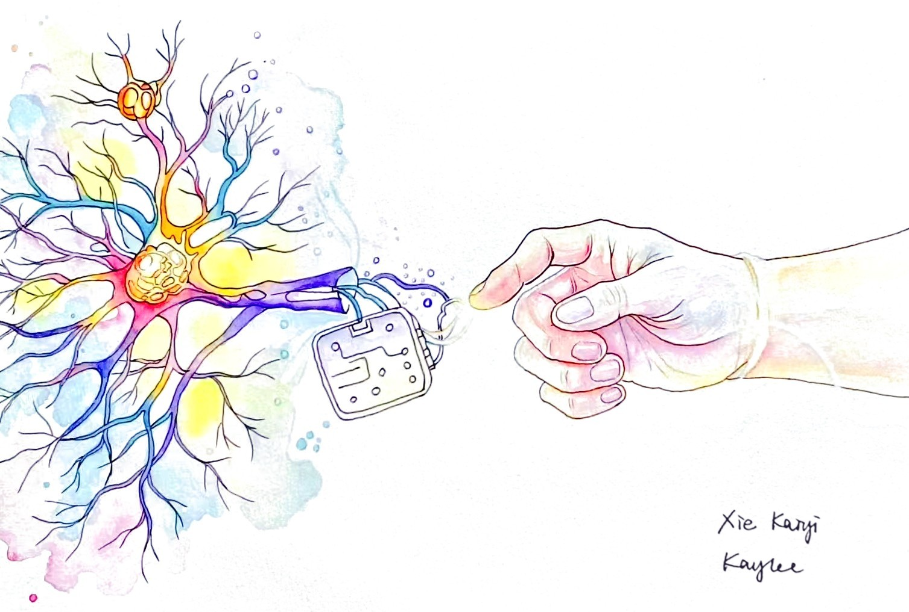
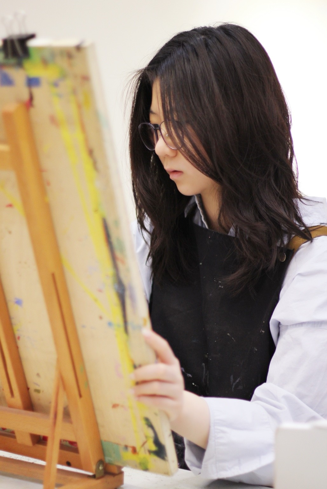
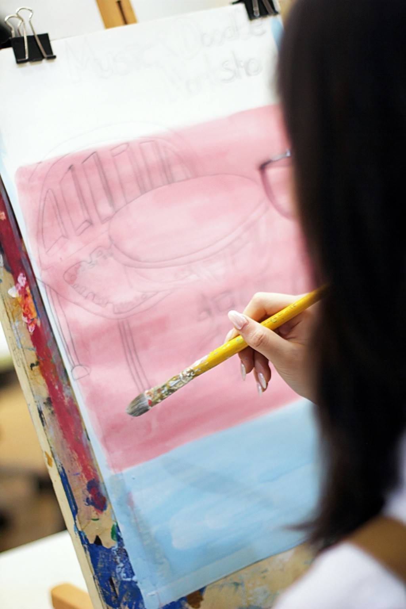

Ways of Seeing.
Through painting, film, and conversations, I explore how we see the world —and how others might see it differently.

Reconnection, 2025
I painted this watercolor after helping film the BCI documentary Reconnection.
The documentary was part of my 2025 summer internship, and the painting shares its name. A chip bridges a broken neural pathway, carrying signals toward a hand and symbolizing hope for restored movement. I brought it back to the BCI ward to offer patients warmth and a sense of possibility.

I'm Kaylee Xie
I’m a high school student in Nanjing, China. I paint, make short films, and ask questions about how people make sense of what they see.
My curiosity has taken me from the gardens of my hometown to a brain-computer interface research ward. Sometimes an encounter becomes a film; sometimes it stays with me until I find a way to paint it. Watching European students respond to Chinese micro-dramas brought another question into focus: what do other people notice in a story that feels familiar to me?
This website brings together my artwork, films, and early research. Across them, I’m learning to look more closely, listen to other interpretations, and reconsider my own.
Work
Inside the brain's outline, leaves take the place of folds. Green emerges from violet, and small flowers interrupt the familiar anatomy. I imagine thought as something alive, capable of growing into a shape I cannot fully predict.
I let water, music and branching lines travel through a figure beneath an arch. Its open outline makes room for the surroundings to enter. The painting treats perception as something we live through with the whole body.
Mochou Lake’s breeze becomes a hazy wash; blue-green layers evoke cool, damp leaves, while pink-white buds suggest a faint, sweet lotus scent.
Melody takes shape in flowing lines and soft colors, inviting the eye to follow its rhythm and feel the emotions carried by each note.
Soft greens and violet washes frame Zhan Garden’s white walls and blue-tiled roofs, capturing a quiet corner of Nanjing.
Films & Stories
One Movement at a Time
The film begins with an ordinary gesture: a hand lifting a bottle of water. For Mr. Guo, who had been paralyzed by a spinal cord injury, a brain-computer interface and rehabilitation made that gesture possible. I visited Jinling Hospital in Nanjing to understand what lay behind it.
A science explainer I filmed independently, spring 2026.
Read more
I was struck by the way the rooms made the work visible. Patients entering the outpatient clinic pass the training room and can see others practicing with the equipment. An unfamiliar technology becomes something they can encounter through another person's effort.
The film includes EEG caps and an exoskeleton, as well as the implant and pneumatic glove used by Mr. Guo. I describe these devices through the actions they support. Alongside tests and study requirements, the doctors discuss what each patient hopes to do again, keeping a personal wish in view throughout the clinical work.
The Porcelain Tower is a study in remembering through form. Its colored glass recalls an older glazed surface, while the new structure reaches around the surviving base. I am drawn to the way a contemporary building can hold a place for something lost.
Read more
The original tower traveled far beyond Nanjing through European fairy tales. In its replacement, alternating visible and hidden levels and fused colored glass carry echoes of the earlier shape and material.
I was especially interested in what happens below the surface. The new tower widens toward the ground and carries its load outside the ancient base and underground chamber. Preservation becomes part of the building's structure, as well as its appearance.
The stillness of Zhan Garden is full of activity. Beneath the composed views, plants and small animals help sustain the pond. I follow that living detail, looking at a garden as a place that is continually being cared for.
With Yang Tao, deputy director of Zhan Garden.
Read more
For much of the garden's 600-year history, its views were reserved for officials and nobles. A restoration led by architect Liu Dunzhen helped turn the garden into a public place. The change in who can enter is part of the way I understand its beauty.
Deputy director Yang Tao describes the ecology maintained through aquatic plants, snails and river mussels. These relationships are easy to miss when looking at the pond as a picture. In the film, I stay with the birdsong, water and slower rhythm of walking, small experiences that make nature part of an ordinary day in the city.
Research
Learning to see a story through someone else's eyes.
The viewer's part
A story carries gestures and conventions its maker may take for granted. I wanted to attend to that distance when European viewers encountered Chinese historical-romance micro-dramas, bringing their own cultural experiences to images familiar to me.
Watching and listening
I proposed and ran a pilot with a supervisor at Nanjing University. Twelve European university students in Nanjing watched two micro-dramas during EEG recording. Questionnaires and interviews gave them room to describe what they had understood.
An open inquiry
Comparing key sound effects with background music, we found no consistent difference in how closely viewers' EEG responses matched. That open result led me back to the viewers. I want to keep exploring the context each person brings to a scene.
Continuing the inquiry
In a follow-up, I would test humor, narrative tension and cultural familiarity separately, and try a brief cultural note within a scene. I am interested in the point at which context helps someone enter a story while preserving the rhythm of watching.
Community

Music & Doodle Workshop
After dance practice, I wanted there to be room for a different kind of movement: a hand wandering over paper, with music nearby and no routine to remember. I set up the Art Decompression Corner so club members could draw or simply stay for a while.
On the poster, empty chairs gather around a shared table. Loose red lines sit against washes of pink and blue. I left the seats empty so the invitation could belong to anyone, including someone unsure of what to draw.
I also brought friends together to play piano and flute for patients at rehabilitation centers. I am drawn to these shared encounters, where art takes its shape from the people present.